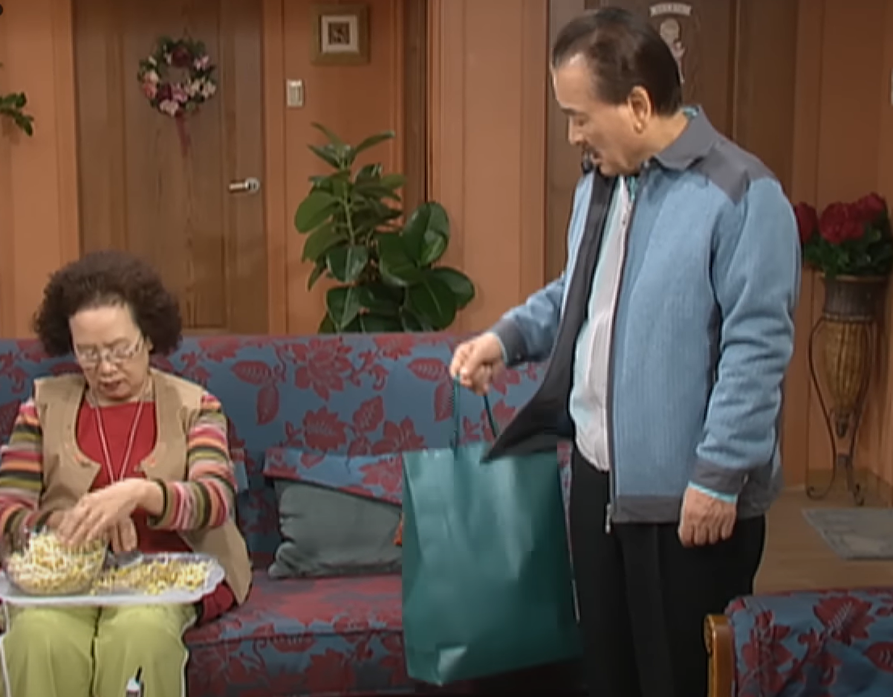
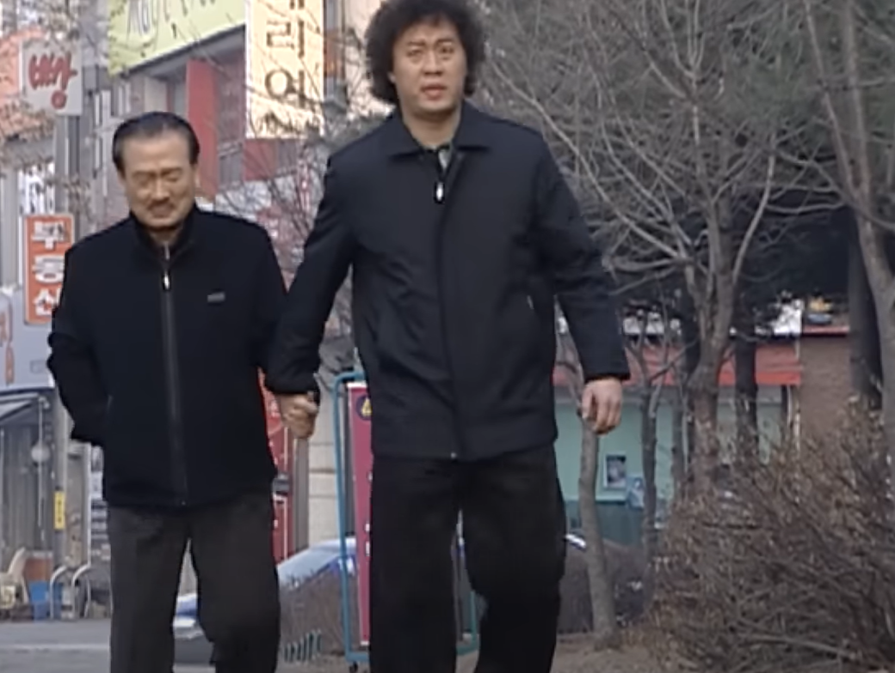
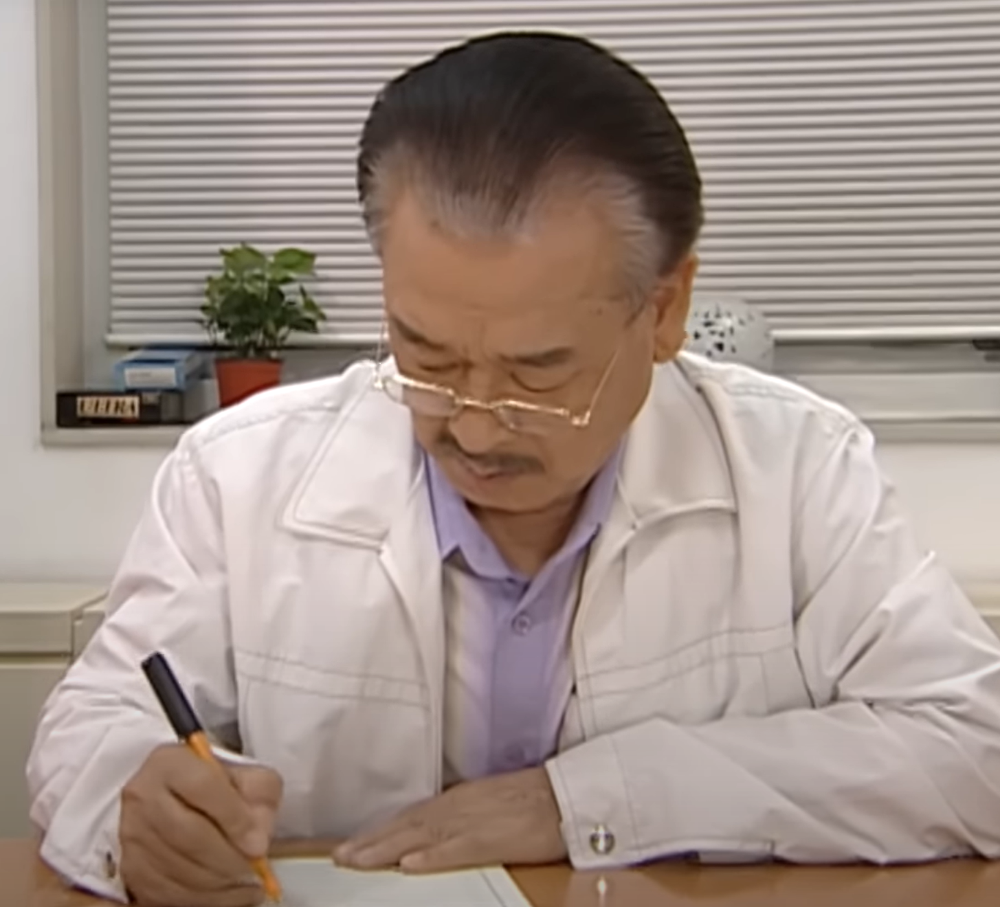

개성댁이 아닌 사람은
선택 : 번
사진 속 남자의 정체는

종이가방 안에 든 것은

준하와 순재가 찾는 인물은
쌍피문희 VS ???? VS 오광신지
준하가 이 장면 다음 바로 만나게 되는 인물은

사진 속 유미를 시간순서에 따라 나열하세요
옆학교 전교1등 김윤주가 윤호에게 이별의 의미로 건넨 사자성어
유미아빠가 준하에게 맡기고 간 물건은

순재가 장손 민호에게 주는 십계명 열번째에 적힌 내용은